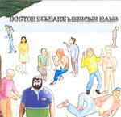

| Artist: | Doctor Dunbar's Medicine Band |
| Title: | Doctor Dunbar's Medicine Band |
| Label: | Ant Nest |
| Length(s): | minutes |
| Year(s) of release: | 2005 |
| Month of review: | [12/2005] |
| 1) | Good Bye Song | 3.33 |
| 2) | Crazy Baby | 2.17 |
| 3) | My One True Love | 5.07 |
| 4) | The Lucky Strike | 1.42 |
| 5) | Tennis Shoes | 3.35 |
| 6) | Brand New Day | 5.02 |
| 7) | I Wanna Party | 4.30 |
| 8) | The Peak Performance Song | 5.01 |
| 9) | Need To Get | 4.16 |
| 10) | Happy Go Lucky | 4.12 |
| 11) | Rock Your World | 2.49 |
Crazy Baby continues in this vein, although this time we also get a bit of organ to bind us over. That organ also plays a strong role on the Hendrixian My One True Love. However, the vocals are quite a bit more melodic. It all sounds as if recorded in the seventies, but the songs are good. Very good. It is striking that so many of the bands of this type come from Scandinavia.
The Lucky Strike is a relatively short tune, and a straightforward, screamish rocker. That is actually what makes it okay. Tennis Shoes sounds a bit messy with those somewhat uncontrolled double male vocals, similar to the vocals of the Rolling Stones in the early seventies.
Brand New Day does remind me of a seventies rock song, but which, I can't figure it out. I am talking about the chorus here. There are elements of ELO here (but rowdier), of Golden Earring, but mainly the rougher side of the Beatles. I Wanna Party bursts loose with organ and high paced, shouted vocals. The band really goes full out here, and does not care one bit whether you can make sense of the lyrics here. But, notwithstanding the lack of elegance, due to in fact, the melodicity and the obvious enthousiasm makes up for much.
Time for some gas back. That happens in The Peak Performance Song. Then the rhythm guitar sets in and we are in happy go lucky country. Again, the band has a rough-and-ready approach that works well: make plenty of noise, have a good melody and things will work out fine. And they do.
Need To Get continues the retro rock style with some excellent female vocals adding to the masculine ones. Although not particularly progressive by themselves, the songs do harbour enough variation to keep things interesting. On Happy Go Lucky the pace goes up again. This is drum dominated rock 'n' roll with some nice piano at the end, almost drowned in the messy rock sound. Rock Your World is the closer, but no less energetic.